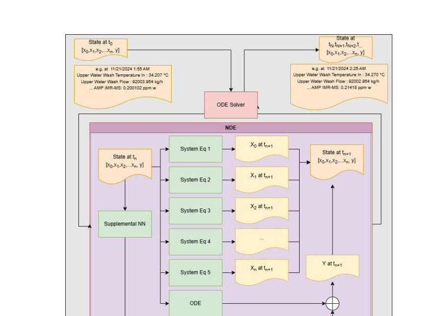
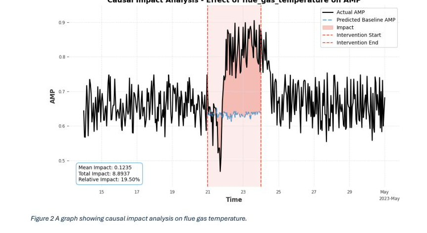
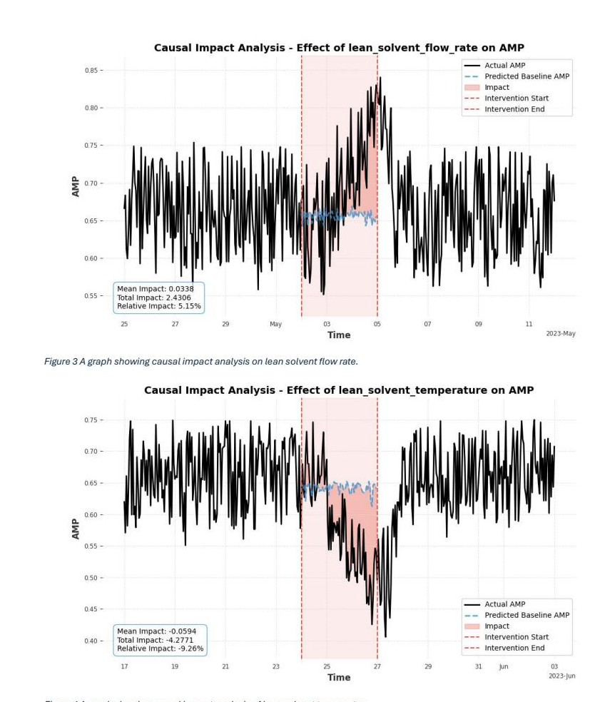
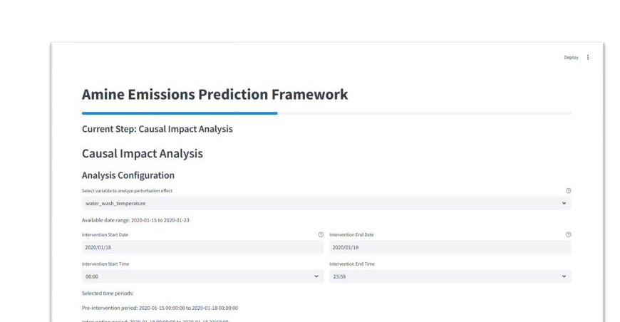
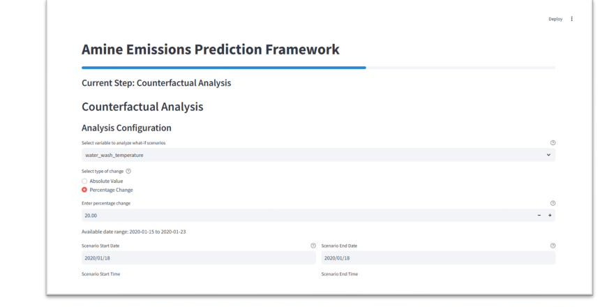
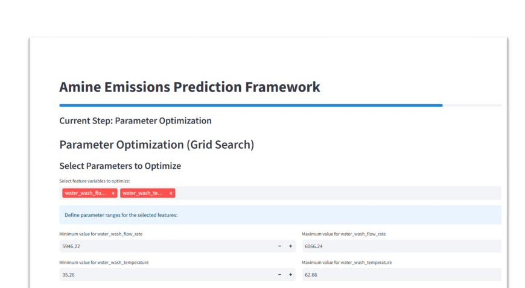
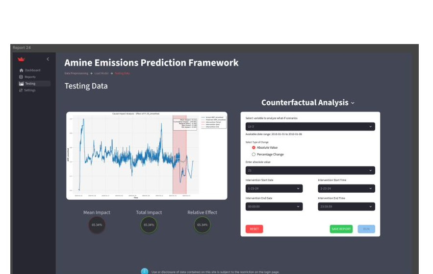

EmiFor is a deep learning framework built by VISIMO that predicts solvent emissions from post-combustion carbon capture plants, enabling operators to understand, simulate, and minimize emissions before they occur.
The Problem
Amine-based post-combustion carbon capture (PCC) scrubs flue gas with an amine solution, capturing approximately 90% of CO2. But amines degrade over time, producing carcinogenic by-products like nitrosamines and nitramines that must be carefully managed.
Today, emission tracking is largely manual: process simulators and spreadsheets, inconsistent sensor data, and no tool that can forecast what emissions will look like in the next 30 minutes. The ability to forecast in real time is critical for safe, compliant plant operation.
EmiFor fills that gap: a forecasting framework grounded in real plant physics, validated against two international pilot plants, and delivered through an interface any operator can use.
Amine PCC Process
Technical Approach
Three interconnected activities formed the technical core of Phase I: understanding and augmenting available data, developing two families of deep learning models, and validating predictive and analytical capabilities on real plant data.
Technology Centre Mongstad (TCM), Norway provided the primary dataset. Statistical analysis (stationarity, autocorrelation, Granger causality) revealed the data captured mostly steady-state operations, insufficient for physics-informed models that require step-change variability.
Niederaussem pilot plant, Germany provided a dynamic experimental campaign with controlled step changes in five process variables. Models were trained directly on this data and it served as the template for synthetic generation.
The primary approach embeds a neural network inside a differential equation framework anchored by the second-order step response function from the Charalambous et al. flexible CO2 capture plant literature:
A supplemental neural network (MLP or LSTM) learns residual nonlinear dynamics not captured by the physics backbone, while preserving interpretable parameters: time constants τ, damping ξ, time delay ϑ.
A Temporal Convolutional Network (TCN) served as the baseline model, with both MSE and quantile loss variants to quantify prediction uncertainty.

Model Results
Performance is measured by MAPE using a sliding-window protocol: 16-step input (80 min) predicting a 6-step horizon (30 min). Lower is better.
| Dataset | Loss | MAPE |
|---|---|---|
| Synthetic | MSE | 4.26% |
| Synthetic | Quantile | 4.82% |
| Niederaussem | MSE | 4.64% |
| Niederaussem | Quantile | 6.54% |
MSE variants outperform quantile; quantile models add uncertainty bounds at some accuracy cost.
| Model | Dataset | MAPE |
|---|---|---|
| MLP | Synthetic | 4.71% |
| MLP | Niederaussem | 13.20% |
| LSTM | Synthetic | 4.48% |
| LSTM | Niederaussem | 8.26% |
LSTM outperforms MLP, particularly on real plant data, and serves as the stronger baseline for comparison with the physics-informed NDE.
| Prior Knowledge | Dataset | MAPE |
|---|---|---|
| None (NN only) | Synthetic | 4.48% |
| None (NN only) | Niederaussem | 8.26% |
| Linear Base | Synthetic | 4.71% |
| Linear Base | Niederaussem | 4.81% |
| Physics-Informed | Synthetic | 4.22% |
| Physics-Informed | Niederaussem | 4.44% |
Embedding step-response physics reduces real-plant MAPE from 8.26% to 4.44%: a 46% error reduction.
Analytical Capabilities
EmiFor exposes three analytical modes that transform forecasting models into operational decision-support tools for plant engineers and operators.


Demonstration Application
A Streamlit proof-of-concept demonstrates real-world deployability. The framework is data-agnostic and accepts any time series, supporting any process governed by differential equations.




Phase II Roadmap
Phase II target variables and techniques: